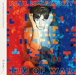
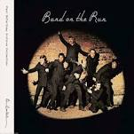

Discografia
-
Tug Of War(1982) Tug of War es el tercer álbum de estudio del músico británico Paul McCartney, publicado por la compañía discográfica Parlophone en abril de 1982. Precedido por McCartney II, Tug of War es el primer álbum en solitario de McCartney tras la disolución oficial de Wings, que tuvo lugar en abril de 1981. Las sesiones de grabación del álbum reunieron a McCartney con el productor George Martin por primera vez desde la disolución de The Beatles, y tuvieron lugar tras el asesinato de John Lennon, su antiguo compañero de The Beatles, el 8 de diciembre de 1980.
 -
McCartney II(1980) McCartney II es el segundo álbum en solitario del músico británico Paul McCartney, publicado por la compañía discográfica Parlophone en mayo de 1980.6 El disco, caracterizado por el uso de sintetizadores y por la experimentación con nuevos sonidos en el estudio de grabación, fue el primer trabajo solista de McCartney —con la excepción de Thrillington, una versión instrumental del álbum Ram— desde la formación del grupo Wings en 1971. El futuro del grupo, que un año antes había publicado Back to the Egg, aún no estaba decidido y fue oficialmente disuelto por McCartney un año después. En junio de 2011, Hear Music reeditó McCartney II como parte del catálogo Paul McCartney Archive Collection.
-
Band On The Run(1973) Band on the Run es el tercer álbum de estudio del grupo británico Wings, publicado por la compañía discográfica Apple Records en diciembre de 1973. El álbum, el quinto de Paul McCartney después de la separación de The Beatles, se convirtió en uno de los trabajos más exitosos del músico en solitario, alcanzando el primer puesto de las listas de éxitos en Estados Unidos, Reino Unido, Australia, Nueva Zelanda, España y Noruega, y contribuyó a revitalizar la carrera en solitario de McCartney bajo la formación de Wings, creada dos años antes para la grabación de Wild Life. Fue también un éxito de crítica y definido por Jon Landau, editor de la revista musical Rolling Stone como «posiblemente el mejor disco publicado por cualquiera de los cuatro músicos que una vez se llamaron The Beatles, con la posible excepción de John Lennon/Plastic Ono Band».5 En 2000, la revista Q situó a Band on the Run en el puesto 75 de la lista de los 100 mejores álbumes británicos de todos los tiempos. En 2003, la revista Rolling Stone situó el álbum en el puesto 418 de la lista de los 500 mejores álbumes de todos los tiempos.6
 -
Ram(1971) Ram es un álbum de estudio en solitario del músico británico Paul McCartney, publicado por la compañía discográfica Apple Records en mayo de 1971. El disco, el único acreditado junto a su esposa Linda McCartney, fue grabado durante la acción legal que el músico desarrolló en el Tribunal Supremo del Reino Unido para disolver la asociación The Beatles, un año después de la separación del grupo. Debido a ello, su lanzamiento coincidió con un periodo de acritud entre McCartney y su excompañero de grupo, John Lennon, quien percibió referencias explícitas hacia su persona en las letras de canciones como «Too Many People». Ram fue el segundo de dos trabajos que McCartney publicó entre el fin de The Beatles y la formación de su propio grupo, Wings. Junto a Linda, el músico grabó Ram en Nueva York con los guitarristas David Spinozza y Hugh McCracken, así como el futuro miembro de Wings Denny Seiwell. Tras su lanzamiento, Ram fue recibido de manera mayormente negativa por parte de la prensa musical (mayormente influenciada por la reciente separación de The Beatles) aunque, con el paso de los años, la crítica ha sido mucho más favorable con el álbum, que en la actualidad tiene una puntuación de ochenta y seis sobre cien en la web Metacritic. A pesar de las críticas, a nivel comercial Ram obtuvo un mayor éxito y encabezó las listas de discos más vendidos de países como Canadá, España, Noruega, Países Bajos, Reino Unido y Suecia. Además, el primer sencillo, «Uncle Albert/Admiral Halsey», se convirtió en el primer número uno de McCartney en la lista estadounidense Billboard 200. En mayo de 2012, Hear Music reeditó una versión remasterizada de Ram como parte de la serie The Paul McCartney Archive Collection. En la actualidad es considerado un álbum de culto por oyentes y críticos especializados.
-
McCartney (1970) McCartney es el primer álbum de estudio en solitario del músico británico Paul McCartney, publicado por la compañía discográfica Apple Records en abril de 1970. Su lanzamiento coincidió en el tiempo con el de Let It Be, el último álbum de The Beatles, a pesar del intento de sus compañeros de grupo por retrasar su publicación en favor de otros proyectos de Apple. Dicho conflicto provocó un nuevo enfrentamiento entre McCartney y sus compañeros de The Beatles, sumado al intento del primero por mantener unido el grupo y por controlar la gestión de Apple a través de su cuñado Lee Eastman. El músico grabó el álbum durante un periodo de depresión y confusión después de que John Lennon anunciase durante una reunión privada en septiembre de 1969 que quería abandonar The Beatles de forma definitiva. Salvo por la contribución vocal de su esposa Linda, McCartney tocó todos los instrumentos en el álbum. Con grabaciones caseras y escasos arreglos, McCartney exploró el «retorno a las bases» que había sido su concepto original para el proyecto Get Back en 1969. Su lanzamiento fue acompañado de un comunicado de prensa en forma de autoentrevista, suministrada dentro de las copias británicas del álbum, que sirvió como anuncio oficial de la separación de The Beatles el 10 de abril de 1970. En parte como resultado del papel de McCartney en el fin de The Beatles, el álbum recibió una respuesta desfavorable de la mayoría de la prensa musical, a excepción de la canción «Maybe I'm Amazed». Sin embargo, McCartney se benefició de la publicidad en torno a la ruptura del grupo y alcanzó el primer puesto durante tres semanas en la lista estadounidense Billboard 200 y el segundo en el Reino Unido. El álbum fue reeditado en junio de 2011 como parte de la serie The Paul McCartney Archive Collection.